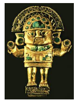
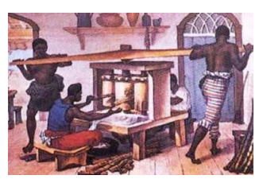

AS RELAÇÕES POLÍTICO-ECONÔMICAS ENTRE A EUROPA E A AMÉRICA E OS PROCESSOS DE INDEPENDÊNCIA.
A chegada dos Europeus a América no final o século XV desencadeou um processo de conquista do território frente às populações locais, bem como deu início a disputas entre as monarquias europeias que desejavam ampliar seus quadros coloniais fora do continente. Neste contexto tem início um modelo de relação político-comercial que ficaria conhecido como Pacto Colonial. O Pacto Colonial teve por base um formato de acumulo de riquezas por parte das potências metropolitanas apoiando-se no que se convencionou chamar de política econômica mercantilista. A expansão europeia na América está repleta de fatos e processos que marcaram em muito as populações de ambos os lados do atlântico, e que culminaram com o processo das independências americanas. O Brasil, única colônia portuguesa em solo americano, apresentou as suas peculiaridades em relação aos demais territórios colônias da América. Ao longo da leitura deste capítulo é importante que você junto subsídios para responder as seguintes questões: Qual o significado do Pacto Colonial na Economia europeia do período? Quais as principais características do Mercantilismo? Como se deu o processo das independências na América? Quais os principais aspectos do Brasil no que se refere ao período que se estende da sua colonização a sua independência?
CONSTRUINDO CONHECIMENTOS
Durante o período em que esteve em vigor o absolutismo nos Estados europeus, a prática econômica por eles desenvolvida foi a do mercantilismo. Trata-se de um modelo onde a interferência do Estado nos assuntos econômicos é muito grande, traduzindo-se no intervencionismo e no dirigismo em relação à produção. Buscavam o acumulo de riqueza e uma balança comercial favorável demonstrando dessa maneira a eficácia do governo e o prestígio do monarca.
PARA ENTENDER MAIS
Pesquise textos e vídeos na internet que apresentem as características do sistema econômico mercantilista: Metalismo, Industrialização, Protecionismo Alfandegário, Pacto Colonial e Balança Comercial Favorável.
O protecionismo alfandegário foi outra prática comum dos Estados modernos. Trata-se da adoção de medidas que facilitassem o desenvolvimento de certos tipos de produção que teriam redução de impostos e outros estímulos para o seu desenvolvimento, ao mesmo tempo em que se sobretaxavam os produtos estrangeiros que entrassem no país e que fizessem concorrência com a produção interna. Todos os Estados absolutistas adotaram tais medidas.
De todas as características e práticas adotadas pelos Estados que desenvolveram a política econômica mercantilista na modernidade, reservamos uma atenção especial à questão do Sistema colonial. O sistema colonial diz respeito a toda uma série de práticas políticas e econômicas desenvolvidas entre os países metropolitanos e as suas colônias.
O exclusivismo nas relações é uma das características mais marcantes neste sistema, juntamente com o dirigismo da metrópole nos mais diversos assuntos da colônia, trata-se do que passou a ser chamado de “pacto colonial”. Estas eram abastecidas com os produtos manufaturados na Europa e em troca forneciam sua produção a preços módicos para serem revendidos noutros mercados a altos preços. Soma-se a isso a forte carga tributária que recaia sobre a produção colonial, inviabilizando o desenvolvimento de determinados produtos.
 No século XVI tem início o processo de colonização da América, sendo a Espanha responsável pela ocupação de diversas regiões deste continente. O sistema de exploração econômica utilizado pelos países europeus foi o mesmo em todos os locais, a extração dos recursos naturais e minerais de suas colônias.
Ouro e pedras preciosas eram utilizados pelos Inca para objetos de adorno e culto.
http://www.luzcom.com.br/inca/html/ruinas.htm
As populações nativas americanas como os incas, astecas e maias passaram por um processo de dominação e aculturação tendo a sua cultura destruída, sendo-lhes imposto a cultura e os valores dos dominadores vindos da Europa. Além disto, todo o sistema administrativo e legislativo ficava nas mãos da coroa espanhola, a fim de evitar sublevações e questionamentos ao seu poder.
Das colônias se esperava basicamente que fornecessem a metrópole produtos in natura, metais e pedras preciosas. Nas grandes propriedades que produziam a cana de açúcar ou o algodão, na extração de madeiras como o pau-brasil ou ainda na exploração de minérios, a mão de obra era escrava, nativa ou proveniente da África.
Em algumas situações adotou-se a exploração do trabalho compulsório como a servidão temporária, a mita e a encomenda. A mita, ou repartimiento era uma forma de trabalho compulsório onde as populações indígenas da América Espanhola eram escaladas para jornadas de trabalho recebendo baixas remunerações e uma porcentagem do trabalho realizado.
Outro sistema de trabalho bastante utilizado pelos espanhóis foi o da encomienda concedida pela Coroa. Esta prática colocava o trabalho das comunidades indígenas sob os cuidados de uma encomendero que os utilizava na agricultura e no trabalho das minas.
Com o passar do tempo, e na medida em que os descendentes de europeus nascidos na América, chamados de criollos, foram sentido o peso da metrópole sobre os seus negócios, tiveram início os movimentos de resistência. Durante o século XVIII ocorreram diversas revoltas que foram reprimidas com muita violência pelos representantes da coroa em solo americano, até que no século XIX, o processo de independência ganhou força.
Entre os principais líderes da independência na América Espanhola estão Simón Bolivar e San Martín. Símon Bolivar foi um líder político e militar venezuelano, de tendência liberal. No ano de 1813 liderou a invasão da Venezuela, sendo recebido e aclamado pela população como o “libertador”. San Martín foi um líder político e militar argentino que atuou de forma decisiva nos processos de independência da América, especialmente nos casos da Argentina, Chile e do Peru.
O BRASIL: ASPECTOS DA COLONIZAÇÃO À INDEPENDÊNCIA
A chegada dos portugueses ao Brasil em 22 de abril de 1500 não trouxe de imediato a colonização destas terras, mas sim a exploração das riquezas naturais, especialmente o paubrasil extraído da Mata Atlântica.
Esta árvore tinha um grande valor no mercado europeu, pois dela se extraía a seiva utilizada para tingir tecidos na cor vermelha. A prática do escambo junto as populações nativas foi desenvolvida no intuito de coopta-los para o trabalho de corte do pau-brasil e carregamento nos navios.
Detalhe de mapa da costa brasileira com representação de populações indígenas trabalhando na extração do pau-brasil
Nas primeiras três décadas que sucederam a chegada dos portugueses ao Brasil, este território foi atacado por holandeses, ingleses e franceses que saqueavam e contrabandeavam o paubrasil. As Expedições Guarda-Costas enviadas pela coroa portuguesa não foram o suficiente para a proteção do litoral, sendo necessário dar curso ao seu processo de colonização antes que o território fosse dominado por outra monarquia.
 Martin Afonso de Souza foi o responsável pela primeira expedição de colonização no ano de 1530, tendo como principais objetivos como objetivos a povoação do território, a expulsão dos invasores e o cultivo de canade-açúcar, produto de grande valor no mercado europeu. O nordeste brasileiro foi palco das grandes plantações de cana-deaçúcar devido às condições climáticas favoráveis, o que favoreceu o plantio em larga escala. Tem início no Brasil a utilização da mão-obra-obra escrava, de origem africana em larga escala.
Engenho de açúcar - http://www.portalsaofrancisco.com.br/historia-do-brasil/engenho-de-acucar
O engenho de açúcar tornou-se a base da economia colonial, utilizando-se da mão-de-obra africana escrava. O objetivo dos senhores de engenho era a venda do açúcar para o mercado europeu em grandes quantidades. Para que isso ocorresse era necessária a adoção de um modelo capaz de extrair o máximo das propriedades rurais. Este modelo ficou conhecido pelo nome de “plantation”, que nada mais era do que a produção de um único produto utilizando a mão-de-obra escrava. Além do açúcar destacou-se também a produção de tabaco e algodão.
Nesta época, o Brasil foi dividido pela coroa portuguesa em Capitanias que correspondiam a faixas de terras que foram entregues para serem administradas pelos donatários. Os donatários tinham o direito de explorar os recursos da terra, devendo povoar, proteger e estabelecer o cultivo no local. As Capitanias eram passadas de forma hereditárias aos descendentes dos donatários, mas nem por isso pode-se dizer que obtiveram sucesso. A falta de controle por parte da metrópole e os constantes ataques de índios e piratas foram os principais responsáveis pelo insucesso deste modelo. Apenas as capitanias de São Vicente e Pernambuco lograram êxito neste processo.
O passo seguinte foi o estabelecimento pela coroa portuguesa do Governo-Geral, a fim de centralizar o poder e ter mais controle sobre a colônia. O primeiro dos governadores-gerais foi Tomé de Souza. Ele recebeu a incumbência expressa pelo rei de combater os indígenas, aumentar a produção agrícola, defender o território e procurar metais e pedras preciosas.
As bandeiras foram incursões feitas no interior do Brasil a fim de aprisionar índios e descobrir minas de ouro e pedras preciosas. Os bandeirantes foram os responsáveis por encontrar as primeiras minas de ouro e diamantes nas regiões de Minas Gerais, Goiás e Mato Grosso. Além disso, deve-se a eles a ampliação do território brasileiro para além do que fora estipulado pelo Tratado de Tordesilhas.
Nesta época, a cidade de Salvador tornou-se a capital do Brasil. Nela, assim como na administração das outras cidades, os "homens-bons", ricos proprietários que compunham as Câmaras Municipais e conduziam os rumos da política local. Neste cenário, o povo comum não tinha espaço político, devendo apenas acatar as decisões da aristocracia local.
O Brasil colonial desenvolveu-se como uma sociedade patriarcal onde o senhor de engenho exercia seu poder, comandando e submetendo os mais fracos conforme os seus interesses. Nesta sociedade as mulheres tinham os seus poderes limitados ao ambiente doméstico que, em última instância as fazia submissas aos homens que detinham o poder sobre elas. A casagrande foi a maior expressão deste modelo de família patriarcal. Seu oposto foi a senzala onde a população negra vivia sob o regime do medo e da opressão, sem as mínimas condições de dignidade.
QQ uestões políticas envolvendo a Portugal e Espanha dão curso a invasão holandesa no Brasil. A unificação das coroas ibéricas entre os anos de 1580 e 1640, nas mãos da monarquia espanhola mexeu nos interesses holandeses na região que passaram a adotar medidas extremas em relação ao Brasil. de 1630 e 1654, o Nordeste brasileiro foi alvo de ataques e invasões. O comércio do açúcar foi o maior dos interesses holandeses nestas terras, tendo o desenvolvido até o ano de 1654 quando são expulsos do país. Q
A exploração das minas de ouro trouxe muitos lucros para a coroa portuguesa que cobrava impostos sobre que era encontrado. O quinto, ou seja, 20% de todo ouro encontrado na colônia era destinado ao tesouro português. Nas cidades envolvidas neste processo, o desenvolvimento urbano e cultural tomou curso, legando-nos importantes obras da arquitetura e da escultura como é o caso da produção artística das cidades mineiras onde destaca-se a obra de Antônio Francisco Lisboa, conhecido como o Aleijadinho.
PARA SABER MAIS
Como resultado da exploração da coroa portuguesa sobre o Brasil, várias revoltas aconteceram, entre elas destacam-se:
Busque informações na internet sobre as Revoltas Coloniais, e utilizando o quadro abaixo como modelo, estabeleça em seu caderno uma comparação entre elas estabelecendo líderes, causas e consequências de cada uma delas.
| Revolta | Líderes | Causas | Consequências |
|---|---|---|---|
| Guerra dos Emboabas (1707 a 1709) | |||
| Revolta de Filipe dos Santos (1720) | |||
| Guerra dos Mascates (1709 e 1711) | |||
| Inconfidência Mineira (1789) | |||
| Revolta de Beckman (1684) | |||
| Conjuração Baiana (1798) | |||
| Revolução Pernambucana (1817) |
Em virtude da expansão napoleônica sobre a Península Ibérica a Corte Portuguesa transferese ao Brasil no ano de 1808, instalando-se na cidade do Rio de Janeiro. Neste período foi aberto o comércio brasileiro aos países amigos de Portugal, entre eles a Inglaterra, que adquiriu vantagens comerciais que acabaram inclusive por prejudicar o desenvolvimento da indústria em solo brasileiro.
Passado o período napoleônico, no ano de 1820, ocorreu a Revolução do Porto, e os revolucionários vitoriosos passaram a exigir o retorno de D. João VI para Portugal e a aprovação de uma Constituição. Pressionado, Dom João VI volta para Portugal, em abril de 1821, deixando no Brasil, o filho D. Pedro como príncipe regente. Devido a situação de crise política por que passava o país, e ainda atrelado aos desígnios da coroa portuguesa, D. Pedro proclama a Independência no dia 7 de setembro de 1822, tornando-se o primeiro imperador do Brasil, com o título de D. Pedro I.
O QUE APRENDI
Neste capítulo você aprendeu que com a chegada dos Europeus na América no final o século XV desencadeou-se um processo de conquista do território frente às populações locais, bem como deu início a disputas entre as monarquias europeias que desejavam ampliar seus quadros coloniais fora do continente. Neste contexto teve início um modelo de relação político-comercial que ficaria conhecido como Pacto Colonial. O Pacto Colonial teve por base um formato de acumulo de riquezas por parte das potências metropolitanas apoiando-se no que se convencionou chamar de política econômica mercantilista. A expansão europeia na América foi repleta de fatos e processos que marcaram em muito as populações de ambos os lados do atlântico, e que culminaram com o processo das independências americanas. O Brasil, única colônia portuguesa em solo americano, apresentou as suas peculiaridades em relação aos demais territórios colônias da América, mantendo a monarquia como sistema político e somente no final do século XIX instituindo o regime republicano.